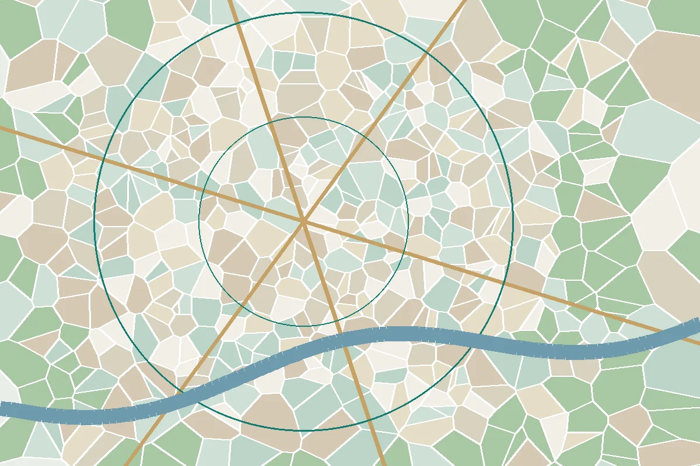

Integrating environmental research into urban planning

Illustrative graphicCities in Bangladesh are growing quickly, and much of that growth is happening on land that once absorbed rainfall, cooled the air or supported agriculture. The consequences show up as problems planners deal with every day: waterlogging after heavy rain, rising daytime and night-time temperatures, and shrinking access to open space. Each has an environmental cause that research can measure.
An old idea with new tools
The principle that planning should start from an understanding of natural systems is not new. Ian McHarg's Design with Nature (1969) argued for mapping geology, hydrology, soils and vegetation as layers and using them to guide where development should and should not go. GIS made that overlay approach routine; satellite data and environmental monitoring now make it possible to measure how those systems change as cities grow.
Three areas where research changes plans
Urban heat
Built surfaces absorb and re-radiate heat, and the loss of vegetation and water bodies reduces evaporative cooling, producing the urban heat island effect described by Oke (1982). Satellite-derived land surface temperature, analysed alongside vegetation indices, consistently shows that greener areas are cooler (for example, Weng et al., 2004). This evidence can inform targets for tree canopy, the protection of water bodies, building and street design, and the location of public cooling spaces.
Flooding and drainage
Filling low-lying land and wetlands removes natural storage, increasing runoff and waterlogging. Mapping historical flood extents, drainage paths and retention areas, and comparing them with land-use change, allows plans to designate flood-flow zones and retention areas before they are built over. Land-use plans such as RAJUK's Detailed Area Plan for Dhaka (2022–2035) include provisions on flood-flow zones and water bodies, and independent research can help assess how such provisions are working in practice.
Green and blue infrastructure
Parks, street trees, canals, ponds and wetlands deliver multiple services: cooling, drainage, recreation, biodiversity and mental health benefits. Treating them as connected infrastructure rather than leftover space (Benedict & McMahon, 2006) changes how they are planned, funded and maintained. Accessibility analysis shows who is within walking distance of open space and who is not.
Making integration practical
- Start early. Environmental baseline studies should inform plan options, not just assess a finished plan.
- Use strategic environmental assessment to compare alternatives at the plan level, where the biggest choices about location and density are made (Therivel, 2010).
- Agree indicators such as green space per person, impervious surface share, water-body area and land surface temperature, and monitor them over time.
- Combine data sources. Satellite analysis is strongest when paired with field surveys, household data and local knowledge.
- Translate findings into planning language: zones, standards, development controls and investment priorities.
Limitations to keep in view
Land surface temperature is not the same as the air temperature people experience. Coarse satellite pixels can blur small but important green spaces. Correlation between vegetation and temperature does not by itself tell a planner which intervention will be most cost-effective. Good integration therefore relies on clear questions, appropriate methods and honest communication of uncertainty, so that environmental evidence strengthens planning judgement rather than replacing it.
References and further reading
- Benedict, M. A., & McMahon, E. T. (2006). Green Infrastructure: Linking Landscapes and Communities. Island Press.
- McHarg, I. L. (1969). Design with Nature. Natural History Press.
- Oke, T. R. (1982). The energetic basis of the urban heat island. Quarterly Journal of the Royal Meteorological Society, 108(455), 1–24. https://doi.org/10.1002/qj.49710845502
- Rajdhani Unnayan Kartripakkha (RAJUK) (2022). Detailed Area Plan (DAP) 2022–2035. Dhaka.
- Therivel, R. (2010). Strategic Environmental Assessment in Action (2nd ed.). Earthscan.
- Weng, Q., Lu, D., & Schubring, J. (2004). Estimation of land surface temperature–vegetation abundance relationship for urban heat island studies. Remote Sensing of Environment, 89(4), 467–483. https://doi.org/10.1016/j.rse.2003.11.005